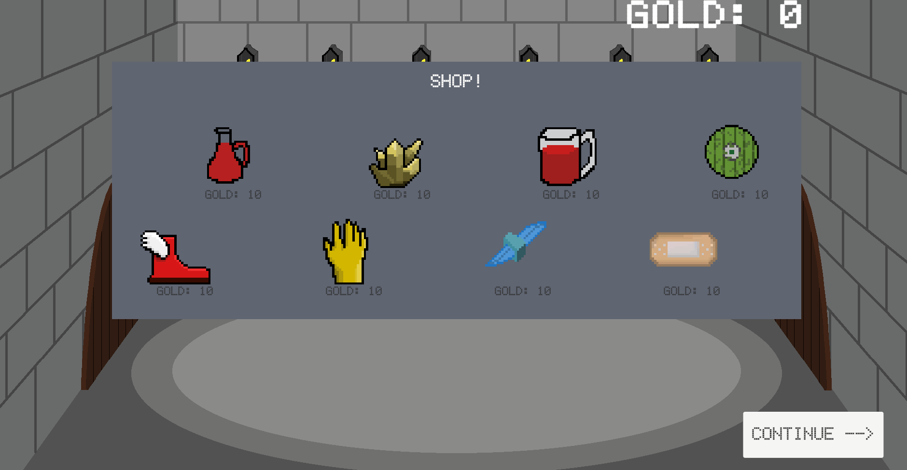
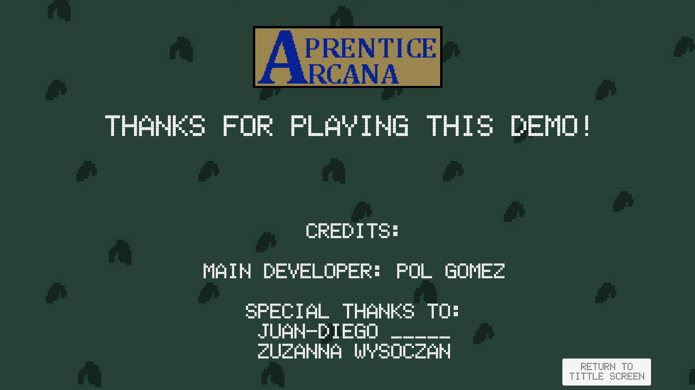

Overview
Aprentice Arcana is a completely solo project — an experiment in reimagining familiar mechanics as a modern roguelike. It represents the kind of experimental indie design I love: taking a known idea and reshaping it into something fresh.
Key features (prototype)
- Unique blend of falling-block mechanics with roguelike progression systems.
- Procedurally escalating difficulty and modular upgrade paths.
- Solo-developed art, code, and game design.
- Early prototype representing experimental indie design.
My role
Aprentice Arcana is a fully solo effort. I was responsible for:
- Game design and mechanical prototyping.
- Programming the core game loop and procedural systems in Unity.
- Creating all placeholder art and UI assets.
- Iterating on gameplay pacing and roguelike progression challenges.
- Planning production scope and solving indie development obstacles.
Development status
The prototype version is available publicly. Production has now resumed with plans to refine the mechanics, rethink the visual direction, and address early design flaws — transforming this concept into a complete and polished indie game.
Screenshots

